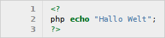
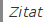
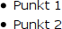
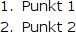
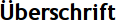
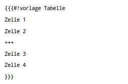
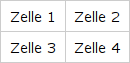
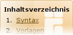

Syntax-Übersicht
Inhaltsverzeichnis
Übersicht über alle Syntaxelemente von Inyoka.
Wann welches Element wie und wo verwendet werden soll (und darf) - und auch, welche Elemente nicht verwendet werden sollen und dürfen - wird hier erklärt:
Leider können im Folgenden nicht alle Elemente aufgrund von Platzmangel als Beispiel (Ergebnis) dargestellt werden.
Syntax¶
| Syntax | ||
| Syntax | Ergebnis | Beschreibung |
'''fett''' | fett | Text fett formatieren |
''kursiv'' | kursiv | Text kursiv formatieren |
`Monotype` | monotype | Text mit fester Buchstabenweite formatieren |
__unterstrichen__ | unterstrichen | Text unterstreichen |
--(durchstreichen)-- | | Text durchstreichen |
^^(hochgestellt)^^ | hochgestellt | Text hochgestellt |
,,(tiefgestellt),, | tiefgestellt | Text tiefgestellt |
~+(größer)+~ | größer | Schrift größer darstellen |
~-(kleiner)-~ | kleiner | Schrift kleiner darstellen |
[size=X]Text[/size] | 14A10B6C | Text in Schriftgröße X darstellen, X wird in Pixel angegeben |
[color=#ABCDEF]Farbe[/color] | #ABCDEF | Text farbig darstellen, die Farbe wird als RGB Hex-Wert angegeben. |
[color=red]Farbe[/color] | Farbe | Text farbig darstellen, die Farbe wird als standardisierter Farbname angegeben |
[mark]Text[/mark] | Text | Textmarker, die Farbkombination ist vorgegeben |
[[Bild(name.png, Größe, Ausrichtung)]] |  | Stellt das Bild "name.png" dar, "Größe" und "Ausrichtung" sind optional; "name.png" muss sich im Anhang befinden. |
[URL] | http://ubuntuusers.de/ | Link auf URL |
[URL Text] | Text | Link auf URL, anstelle der URL wird "Text" angezeigt. |
[:Wikiseite:] | Wiki | Link auf "Wikiseite" im Wiki |
[:Wikiseite:Text] | Text | Link auf "Wikiseite" im Wiki, anstelle des Seitennames wird "Text" angezeigt. |
[[Anker(Name)]] | Erzeugt den Anker "Name" an dieser Stelle, Text ist optional. | |
[#Anker Text] | Syntax | Auf einen Anker oder eine Überschrift innerhalb einer Wikiseite verlinken. |
[:Wikiseite#Anker:Text] | Wiki | Auf einen Anker oder eine Überschrift einer anderen Wikiseite verlinken. |
[Interwiki:Suchbegriff:] | Ubuntu | Link auf "Suchbegriff" auf der mit "Interwiki" angegebenen Seite, die Möglichkeiten werden auf Wiki/InterWiki gelistet. |
[Interwiki:Suchbegriff:alternativer Text] | Wikipedia Artikel zu Ubuntu | Link auf "Suchbegriff" auf der mit "Interwiki" angegebenen Seite. Anstelle des Suchbegriffs wird als Linktext aber "alternativer Text" angezeigt. |
[[Anhang(name_des_anhangs.txt)]] | name_des_anhangs.txt | Auf einen Anhang der Wikiseite verweisen. |
[topic:Name:Text] | Text | Link ins Forum auf den Thread mit dem Namen "Name", "Text" ist optional und wird anstelle des Links angezeigt. |
[post:12345:Text] | Text | Link ins Forum auf das Posting mit der Nummer "12345", "Text" ist optional und wird anstelle des Links angezeigt. |
[forum:Name:Text] | Text | Link ins Forum "Name", "Text" ist optional und wird anstelle des Links angezeigt. |
[paste:Nummer:Titel] | Titel | Link auf den Eintrag "Nummer" mit dem Titel "Titel" im NoPaste Service. |
[ikhaya:Name_der_Meldung:Text] | Text | Link auf eine Ikhaya-Meldung, "Text" wird anstelle des Namens der Meldung angezeigt, ist aber optional. |
[bug:Nummer:Text] | Text | Link auf den Bug "Nummer" auf Launchpad, "Text" ist optional und wird anstelle des Links angezeigt. |
{{{Code}}} | Code | Eine unformatierte Codezeile, Zeilenumbrüche werden übernommen. |
{{{#!code SpracheQuelltext}}} |  | stellt Quelltext mit Syntaxhervorhebung für "Sprache" dar. |
> Zitat |  | stellt "Zitat" als zitierten Text dar. |
* Punkt 1 * Punkt 2 |  | unnummerierte Liste, die Anzahl der Leerzeichen vor * bestimmen die Ebene. |
1. Punkt 1 1. Punkt 2 |  | nummerierte Liste, die Anzahl der Leerzeichen vor 1. bestimmen die Ebene. Kann auch mit Buchstaben genutzt werden (a.). |
= Überschrift = |  | fügt eine Überschrift ein, die Anzahl der Gleichheitszeichen bestimmt die Überschriftenebene (max. 5) |
|  |  | erzeugt eine Tabelle |
\\ und
⏎ oder [[BR]] | erzwungener Zeilenumbruch | |
((Fußnote)) | [x] | Baut eine Fußnote in einen Artikel oder Thread ein. |
## Kommentar | fügt einen Kommentar ein, der nicht in der Ausgabe erscheint. | |
[[Inhaltsverzeichnis(X)]] |  | fügt ein Inhaltsverzeichnis, generiert aus den Überschriften, ein; "X" gibt die Ebene an, bis zu der die Überschriften berücksichtigt werden. |
#tag: tag1, tag2 | ordnet dem Artikel die Tags "tag1" und "tag2" zu. | |
\ | kann einzelnen Sonderzeichen maskieren ("escapen"), die sonst als Syntaxelement interpretiert werden; z.B. ^^( kann man nur über \^^( darstellen . | |
Vorlagen¶
| Syntax | ||
| Syntax | Ergebnis | Beschreibung |
[[Vorlage(Tasten, TASTE)]] | W + I + K + I | stellt TASTE als Bild dar, kombinieren geht mit +, siehe Wiki/Tasten |
[[Vorlage(Getestet, Ubuntuversion)]] | fügt die "Getestet" Infobox für "Ubuntuversion" ein. | |
[[Vorlage(Getestet, general)]] | fügt die "Getestet: general" Infobox ein. | |
[[Vorlage(Baustelle, Datum, "Bearbeiter")]] | fügt die Infobox für Baustellen (neu erstellte Wiki-Artikel, die noch nicht fertig sind) ein, "Datum" ist das geplante Fertigstellungsdatum, "Bearbeiter" der aktuelle Autor des Wiki Artikels. | |
[[Vorlage(Fortgeschritten)]] | fügt die "Artikel für Fortgeschrittene" Infobox hinzu. | |
[[Vorlage(Pakete, "foo bar")]] | fügt das Paketmakro hinzu. | |
[[Vorlage(Ausbaufähig, "Begründung")]] | markiert einen Wiki-Artikel als Ausbaufähig, "Begründung" ist der entsprechende Informationstext | |
[[Vorlage(Fehlerhaft, "Begründung")]] | markiert einen Wiki-Artikel als Fehlerhaft, "Begründung" ist der entsprechende Informationstext | |
[[Vorlage(Verlassen, "Begründung")]] | markiert einen Wiki-Artikel als Verlassen, "Begründung" ist der entsprechende Informationstext | |
[[Vorlage(Überarbeitung, Seite, Autor)]] | markiert einen bestehenden Wiki-Artikel als aktuell in Überarbeitung | |
[[Vorlage(Archiviert, "Text")]] | markiert einen Wiki-Artikel als Archiviert, "Text" ist ein zusätzlicher Informationstext | |
[[Vorlage(Fremd, Paket, "Kommentar")]] | fügt eine Warnung vor Fremdpaketen ein | |
[[Vorlage(Fremd, Quelle, "Kommentar")]] | fügt eine Warnung vor Fremdquelle ein | |
[[Vorlage(Fremd, Software, "Kommentar")]] | fügt eine Warnung vor Fremdsoftware ein | |
[[Vorlage(PPA, Launchpad-Team/PPA-Name, key PGP-Schlüsselnummer, Ubuntuversion(en) )]] | Block für PPA-Quellen | |
[[Vorlage(Fremdquelle, URL, Ubuntuversion(en), Komponente(n) )]] | Block für Fremdquellen | |
[[Vorlage(Fremdquelle-auth, URL zum PGP-Key)]] | Block für Fremdquellenauthentifikation | |
[[Vorlage(Fremdquelle-auth, key PGP-Schlüsselnummer)]] | Block für Fremdquellenauthentifikation | |
[[Vorlage(Fremdpaket, Projekthoster, Projektname, Ubuntuversion(en))]] | Block für Fremdpakete von Projekthostern (GetDeb, Launchpad, ...) | |
[[Vorlage(Fremdpaket, "Anbieter", URL zu einer Downloadübersicht, Ubuntuversion(en))]] | Block für Fremdpakete von Herstellerseiten, etc. | |
[[Vorlage(Fremdpaket, "Anbieter", dl, URL zu einem Download, Ubuntuversion(en))]] | Block für Fremdpakete mit Direktlinks auf Dateien | |
{{{#!vorlage WissenWissensvermerke}}} | fügt den Wissensblock mit "Wissensvermerken" hinzu | |
{{{#!vorlage HinweisHinweistext}}} | fügt eine Hinweisbox ein, "Hinweistext" wird darin ausgegeben | |
{{{#!vorlage WarnungWarntext}}} | fügt eine Warnbox ein, "Warntext" wird darin ausgegeben | |
{{{#!vorlage BefehlBefehl}}} | formatiert die Ausgabe von "Befehl" ähnlich einer Terminalausgabe | |
{{{#!vorlage PaketinstallationPakete}}} | formatiert die Ausgabe von zu installierenden Paketen inklusive weiterer Angaben | |
Ausführliche Beispiele findet man im Artikel Wiki/Textbausteine.
Moderation¶
Achtung!
Diese Syntaxelemente dürfen ausschließlich Teammitglieder benutzen!
| Syntax | ||
| Syntax | Ergebnis | Beschreibung |
[mod=Name]Text[/mod] | Generiert den Text "Moderiert von "Name": "Text" " | |
[edit=Name]Text[/edit] | Generiert den Text "Editiert von "Name": "Text" " | |
- Erstellt mit Inyoka
-
 2004 – 2017 ubuntuusers.de • Einige Rechte vorbehalten
2004 – 2017 ubuntuusers.de • Einige Rechte vorbehalten
Lizenz • Kontakt • Datenschutz • Impressum • Serverstatus -
Serverhousing gespendet von